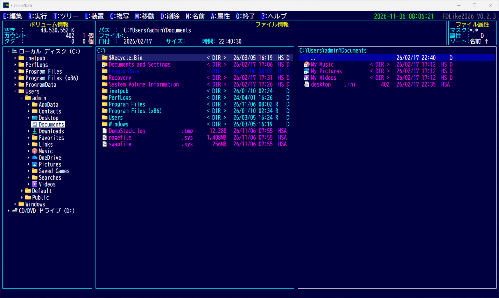
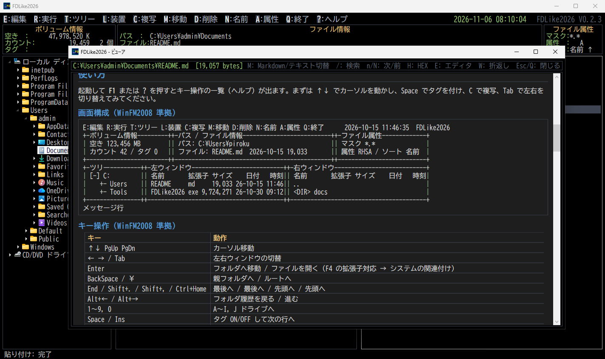

MS-DOS 時代の FD、そして Windows で長く使われた WinFM2008。「キーボードだけで気持ちよくファイルを扱える」あの操作感を Windows 11 でも使い続けたくて作った、ゼロから書き起こした独立したソフトです。WinFM2008 のコードは含まず、作者とも無関係です。
特徴
WinFM2008 互換のキー配置と画面
ファンクション行、情報ボックス、ツリー＋左右ウィンドウ、メッセージ行。配色「Classic」は紺地にシアン枠・黄色数字。
1 キーで操作
C 複写、M 移動、D 削除、N 名前、E 編集、V ビューア、T ツリー、J JumpFolder、F 検索、P・U で zip 圧縮・解凍。
ビューア（V）
テキスト / HEX、Markdown、ソースの色分け、画像（GIF アニメ対応）、CSV の表、PDF / HTML、Word / Excel / PowerPoint の抽出テキスト。
grep（Shift+F）
文字列検索の結果から移動、該当行をビューアやエディタで開く。docx / xlsx / pptx / PDF の中身も検索します。
Windows との連携
エクスプローラーとのドラッグ＆ドロップやコピー＆貼り付け、右クリックで Windows のメニュー、ごみ箱、\\server\share や file:// のパスへそのまま移動。
カスタマイズ（F10）
配色 12 種と約 40 項目の色指定、フォント、表示モード、エディタ・比較ツールの指定。F2 のコマンドマクロ、F4 の拡張子対応。

キー操作（抜粋）
- ↑↓ / Tab移動 / 左右切替
- Spaceタグ
- C / M複写 / 移動
- D削除（ごみ箱）
- N名前の変更
- E編集
- Vビューア
- Tツリー
- JJumpFolder
- Fファイルの検索
- Shift+Fgrep
- P / Uzip 圧縮 / 解凍
- Sソート
- F10カスタマイズ
- F1 / ?ヘルプ
すべてのキーは README と、起動後の F1 ヘルプにあります。
動作環境とインストール
- Windows 11（Windows 10 でも動作します）、x64
- .NET 8 Desktop Runtime（x64）
- Releases から zip をダウンロードし、好きな場所に展開します（Program Files 配下は避けてください）。
FDLike2026.exeを起動します。- 初回に SmartScreen の「Windows によって PC が保護されました」が出た場合は「詳細情報」→「実行」を押してください（コード署名をしていないため表示されます）。
レジストリには書きません。アンインストールは展開したフォルダを削除するだけです。UI とヘルプは日本語のみです。
不具合報告・要望
GitHub の Issues へお願いします。変更履歴は CHANGELOG、WinFM2008 の機能ごとの対応状況は機能対応表にあります。
FDLike2026 は WinFM2008 の作者とは無関係の独立したソフトです。先人への謝辞は README の謝辞をご覧ください。
English
FDLike2026 is a keyboard-driven, two-pane file manager for Windows 11, written in C# / WPF (.NET 8). It follows the key bindings, screen layout and classic color scheme of WinFM2008, a long-lived Windows filer in the lineage of FD, the MS-DOS file manager from Japan. It is an independent implementation written from scratch and is not affiliated with the author of WinFM2008. The UI is Japanese only. Download a zip from the Releases page, extract it and run FDLike2026.exe (.NET 8 Desktop Runtime required). Licensed under MIT.